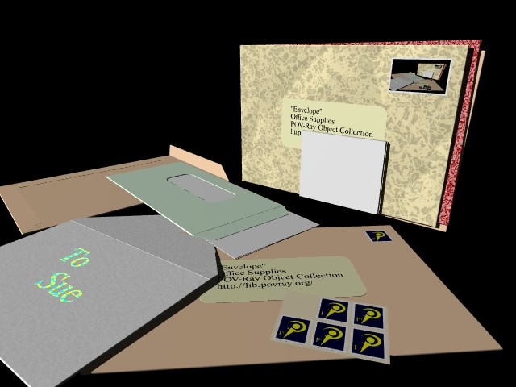
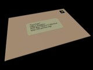
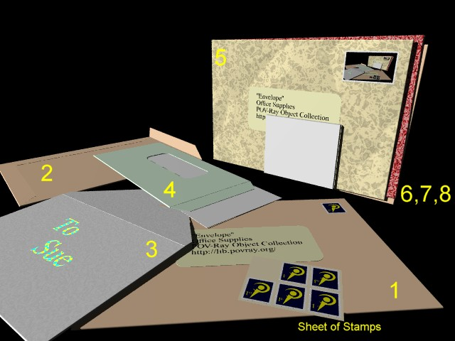

POV-Ray Object Collection
|  |
The Envelope macro was created by Chris Bartlett in January 2008 as part of the 'Office Supplies' theme assembled by Ben Chambers for the POV-Ray Object Collection at http://lib.povray.org/ and is licensed under the terms of the CC-LGPL.
| Envelope() | |
|---|---|
|
The Envelope macro is used to generate an envelope object based upon settings defined using control variables.
All of the control variables have defaults, so you can generate the default envelope object by just including the file and calling the macro:
light_source { <-10,5,-1>, rgb 2}
You can apply standard POV-Ray transformations by wrapping the call in an object statement:
camera {location <0,0.25,-0.2> look_at 0} #include "envelope.inc" Envelope()
object{Envelope() rotate <20,0,10> translate <-0.02,-0.01,0>}
You can assign the object to an identifier and use it as you would use any other declared object:
#declare MyEnvelope = Envelope()
object{MyEnvelope rotate <20,0,10> translate <-0.02,-0.01,0>} | |
| Envelope_Size (SizeCode) | |
|
The Envelope_Size macro sets the dimensions of an envelope based on ISO 269 (plus some North American sizes). You need to call this macro before calling the Envelope macro. The Envelope_Size macro sets the variables Envelope_Width and Envelope_Depth. For example:
Envelope_Size("DL")
sets Envelope_Width to 0.220 and Envelope_Depth to 0.110 to generate an envelope corresponding to the "DL" size in the ISO 269 standard (dimensions in metres). This sized envelope takes an A4 sheet of paper folded in three.
object{Envelope() rotate <20,0,10> translate <-0.02,-0.01,0>} | |
| Envelope_Undef() | |
|
When you call the Envelope macro it will assign default values to any of its control variable that are not already set, but will not alter values that you have explicitly assigned or that were initialised on a previous macro call. When making a series of calls to create a series of different envelopes in your scene file it can be convenient to re-initialising all of the control variables so that you don't inherit settings from the previous macro call.
The Envelope_Undef macro undefs each of the control variables used by the Envelope macro so that they are re-initialised to their default values the next time the Envelope macro is called. | |
| Envelope_RoundCorneredBox(Width, Depth, Thickness, Roundness) | |
|
The Envelope_RoundCorneredBox macro is called by the Envelope macro to create a label shape. It uses CSG to cut rounded corners away from a thin box. The Width, Depth and Thickness parameters define the x, z and y dimensions of the box. The Roundness parameter specifies the radius of the rounded corners.
The Envelope macro passes the Envelope_LabelWidth, Envelope_LabelDepth, Envelope_LabelThickness and Envelope_LabelRounding settings into this macro. | |
| Envelope_StampShape(Width, Depth, Thickness, HoleSize, Border, Texture) | |
|
The Envelope_StampShape macro is called by the Envelope macro to create a stamp shape. It uses CSG to cut a series of holes around the perimeter of a thin box to simulate serrations. The Width, Depth and Thickness parameters define the x, z and y dimensions of the box. The HoleSize parameter defines the radius of the holes used to cut the serrations. The Border parameter defines the width of the white border around the edge of the stamp. The Texture parameter specifies the texture to be applied to the part of the stamp within that border.
The Envelope macro passes the Envelope_StampWidth, Envelope_StampDepth, Envelope_StampThickness, Envelope_StampHoleSize, Envelope_StampBorderSize and Envelope_StampTexture settings into this macro. This macro can also be called on its own to just generate a stamp, or through the Envelope_StampSheet macro to generate a sheet of stamps. | |
| Envelope_StampSheet(Horizontal, Vertical, Width, Depth, Thickness, HoleSize, Border, Texture) | |
|
The Envelope_StampSheet macro can be called to create a sheet of stamps. The Horizontal parameter is used to specify the number of stamps in the 'X' dimension. The Vertical parameter is used to specify the number of stamps in the 'Z' dimension. It calls the Envelope_StampShape to create a grid of stamps passing through the Width, Depth, Thickness, HoleSize, Border and Texture parameters.
You can optionally use the 'Envelope_StampBookArray' array to eliminate specific stamps from the grid, the 'Envelope_StampBookInnerTexture' setting to specify a texture for the surface of the sheet on which the stamps are stuck and the 'Envelope_StampBookOuterTexture' setting to specify a texture for the outer surface of the sheet. | |
| Envelope_Style |
Set to "business" for a more formal style, or "social" for the style of envelope typically used for cards and private letters.
This setting identifies the file containing the envelope definition. The "business" setting uses the file "envelope_business.inc" to define the fold pattern for the main body of the envelope , the "social" setting uses the file "envelope_social.inc". You can add your own files using the same naming convention to add a different fold pattern. If you specify a setting for this variable and the corresponding file does not exist, the macro will use the "envelope_business.inc" file. |
|---|---|
| Envelope_Width | The width of the envelope in metres (the 'X' dimension). e.g. #declare Envelope_Width = 0.225; will generate an envelope 22.5cm wide. The Envelope_Size macro can be used to set the width and depth to using ISO 269 and certain North American standard codes. |
| Envelope_Depth | The depth of the envelope in metres (the 'Z' dimension). e.g. #declare Envelope_Depth = 0.125; will generate an envelope 12.5cm tall. The Envelope_Size macro can be used to set the width and depth to using ISO 269 and certain North American standard codes. |
| Envelope_Thickness | The thickness of the envelope in metres (the 'Y' dimension). e.g. #declare Envelope_Thickness = 0.0005; will generate an envelope 0.5mm thick. |
| Envelope_LabelWidth | If an address label is to be added to the envelope, the Envelope_LabelWidth variable can be used to specify the width of the label in metres (the 'X' dimension) e.g. #declare Envelope_LabelWidth = 0.08; will generate a label 8cm wide. |
| Envelope_LabelDepth | If an address label is to be added to the envelope, the Envelope_LabelDepth variable can be used to specify the depth of the label in metres (the 'Z' dimension) e.g. #declare Envelope_LabelDepth = 0.06; will generate a label 6cm high. |
| Envelope_LabelThickness | If an address label is to be added to the envelope, the Envelope_LabelThickness variable can be used to specify the thickness of the label in metres (the 'Y' dimension) e.g. #declare Envelope_LabelThickness = 0.0005; will generate a label 0.5mm thick. |
| Envelope_LabelRounding | If an address label is to be added to the envelope, the Envelope_LabelRounding variable can be used to specify the radius of curvature of the corners of the label in metres e.g. #declare Envelope_LabelRounding = 0.005; will generate a label with rounded corners of radius 5mm. |
| Envelope_LabelLeftEdge | If an address label is to be added to the envelope, the Envelope_LabelLeftEdge variable can be used to specify the distance between the left hand edge of the envelope and the left hand edge of the label in metres e.g. #declare Envelope_LabelLeftEdge = 0.05; will position the label 5cm in from the left hand side of the envelope. |
| Envelope_LabelBottomEdge | If an address label is to be added to the envelope, the Envelope_LabelBottomEdge variable can be used to specify the distance between the bottom edge of the envelope and the bottom edge of the label in metres e.g. #declare Envelope_LabelBottomEdge = 0.05; will position the label 5cm up from the lowest edge of the envelope. |
| Envelope_WindowWidth | If a window is to be cut into the envelope, the Envelope_WindowWidth variable can be used to specify the width of the window in metres (the 'X' dimension) e.g. #declare Envelope_WindowWidth = 0.08; will generate a window 8cm wide. |
| Envelope_WindowDepth | If a window is to be cut into the envelope, the Envelope_WindowDepth variable can be used to specify the depth of the window in metres (the 'Z' dimension) e.g. #declare Envelope_WindowDepth = 0.06; will generate a window 6cm high. |
| Envelope_WindowRounding | If a window is to be cut into the envelope, the Envelope_WindowRounding variable can be used to specify the radius of curvature of the corners of the window in metres e.g. #declare Envelope_WindowRounding = 0.004; will generate a window with rounded corners of radius 4mm. |
| Envelope_WindowLeftEdge | If a window is to be cut into the envelope, the Envelope_WindowLeftEdge variable can be used to specify the distance between the left hand edge of the envelope and the left hand edge of the window in metres e.g. #declare Envelope_WindowLeftEdge = 0.05; will position the window 5cm in from the left hand side of the envelope. |
| Envelope_WindowBottomEdge | If a window is to be cut into the envelope, the Envelope_WindowBottomEdge variable can be used to specify the distance between the bottom edge of the envelope and the bottom edge of the window in metres e.g. #declare Envelope_WindowBottomEdge = 0.05; will position the window 5cm up from the lowest edge of the envelope. |
| Envelope_StampWidth | If a stamp is to be added to the envelope, the Envelope_StampWidth variable can be used to specify the width of the stamp in metres (the 'X' dimension) e.g. #declare Envelope_StampWidth = 0.02; will generate a stamp 2cm wide. |
| Envelope_StampDepth | If a stamp is to be added to the envelope, the Envelope_StampDepth variable can be used to specify the depth of the stamp in metres (the 'Z' dimension) e.g. #declare Envelope_StampDepth = 0.023; will generate a stamp 23mm high. |
| Envelope_StampThickness | If a stamp is to be added to the envelope, the Envelope_StampThickness variable can be used to specify the thickness of the stamp in metres (the 'Y' dimension) e.g. #declare Envelope_StampThickness = 0.0002; will generate a stamp 0.2mm thick. |
| Envelope_StampHoleSize | If a stamp is to be added to the envelope, the Envelope_StampHoleSize variable can be used to specify the radius in metres of the holes cut around the edge to emulate the serrations found on many stamps. e.g. #declare Envelope_StampHoleSize = 0.0005; will generate a stamp with holes of radius 0.5mm. |
| Envelope_StampBorderSize | If a stamp is to be added to the envelope, the Envelope_StampBorderSize variable can be used to specify the width in metres of the white border around the stamp e.g. #declare Envelope_StampBorderSize = 0.002; will generate a stamp with a 2mm white border around the design of the stamp as specified using Envelope_StampTexture. |
| Envelope_StampInsetRight | If a stamp is to be added to the envelope, the Envelope_StampInsetRight variable can be used to specify the distance the stamp is inset from the right hand edge of the envelope in metres e.g. #declare Envelope_StampInsetRight = 0.005; will position the stamp 5mm in from the right hand edge of the envelope. |
| Envelope_StampInsetTop | If a stamp is to be added to the envelope, the Envelope_StampInsetTop variable can be used to specify the distance the stamp is inset from the top of the envelope in metres e.g. #declare Envelope_StampInsetTop = 0.012; will position the stamp 12mm down from the top edge of the envelope. |
| Envelope_FlapLocation | When 'Envelope_Style' is set to "business" the location of the flap can be set to "Top" or "Right". The top edge is the one furthest in the 'Z' dimension, the right edge is the furthest in the 'X' dimension. When 'Envelope_Style' is set to "social" the flap is always positioned along the top edge. |
| Envelope_FlapLength | The length of the flap on the envelope. |
| Envelope_FlapAngle | The angle of the flap indicates how open it is (in degrees), with 0 being closed, 180 being fully open and 360 being bent right back over the front of the envelope. |
| Envelope_FlapChamferAngle | The sides of the flap are chamfered. The Envelope_FlapChamferAngle variable defines the angle in degrees of the chamfer, with 0 being no chamfer. |
| Envelope_StampOn |
Set to 1 to add a postage stamp to the top right hand corner of the envelope.
Set to 0 to supress the postage stamp. |
| Envelope_WindowOn |
Set to 1 to cut a hole into the envelope and add an address window.
Set to 0 to not cut an address window. If set to 1 the address text defined using the Envelope_Address array will be printed inside this window. |
| Envelope_LabelOn |
Set to 1 to add an address label onto the envelope.
Set to 0 to not add an address label. If set to 1 the address text defined using the Envelope_Address array will be printed on this label. |
| Envelope_AddressOn |
Set to 1 to add an address to the envelope.
Set to 0 to not add an address. If set to 1 the address text defined using the Envelope_Address array will be printed either on the envelope, on the address label or in the address window, depending upon the settings of Envelope_WindowOn and Envelope_LabelOn. |
| Envelope_Address |
An array containing strings of text to be used as the lines of the address. The default setting for this array describes the origin of the envelope.inc file. You can specify as many array elements as you wish and of any length. For example:
#declare Envelope_Address = array[4] {
The text you provide will be scaled to fit into the available space which depends upon the settings of the Envelope_WindowOn and Envelope_LabelOn variables and of the variables defining the dimensions of the envelope, the label or the address window.
"Mr Arthur Dent", "Earth", "Outer Spiral Arm", "Milky Way" } |
| Envelope_Texture | You can define a texture for the envelope yourself, set it to a predefined texture or allow it to use the default settings (a plain brown envelope). Various textures are defined in the file 'envelope_textures.inc' which is automatically included when you include the 'envelope.inc' file. |
| Envelope_LabelTexture | If an address label is to be added to the envelope, you can define a texture for the label yourself, set it to a predefined texture or allow it to use the default setting (yellow). |
| Envelope_WindowTexture | If an address window is to cut into the envelope, a thin layer is added to emulate the paper or plastic material of the window. You can define this texture, set it to a predefined texture or allow it to use the default setting. It is usual for this texture to be mostly transparent. |
| Envelope_ContentTexture | If an address window is to cut into the envelope, a thin layer is added to emulate the contents behind the window. You can define this texture, set it to a predefined texture or allow it to use the default setting. The default texture uses a plain white pigment. |
| Envelope_StampTexture |
If a stamp is to be added to the envelope, the Envelope_StampTexture variable can be used to specify the design of the stamp. This defaults to the POV-Ray logo. The stamp texture starts at the origin and extends in the 'X' and 'Z' dimensions. You will need to scale and rotate the texture definition to fit into the space available on the stamp (the stamp size minus twice the border size). Note. This usually means scaling it down quite small.
You can use an image map or any other texture definition. The default POV-Ray logo uses an object pattern that combines a prism from the standard logo.inc with a couple of text objects. The following example uses an image map:
#declare Envelope_StampWidth = 0.02;
#declare Envelope_StampDepth = 0.023; #declare Envelope_StampBorderSize = 0.0015; #declare Envelope_StampTexture = texture { pigment { image_map {sys "envelope.bmp"} rotate x*90 scale <(Envelope_StampWidth-2*Envelope_StampBorderSize),1,(Envelope_StampDepth-2*Envelope_StampBorderSize)> } } |
| Envelope_StampBookArray |
The Envelope_StampBookArray array can optionally be used in conjunction with the Envelope_StampSheet macro to eliminate specific stamps from the grid of stamps on the sheet. The dimensions of this array should correspond to the Horizontal and Vertical parameters on any subsequent Envelope_StampSheet macro call. The following example eliminates the top left stamp from a 3x2 sheet of stamps.
// Add in a sheet of stamps
#declare Envelope_StampBookArray = array [3][2]; // Remove 1 stamp from the top left hand corner #declare Envelope_StampBookArray[0][1] = 0; object {Envelope_StampSheet(3, 2, Envelope_StampWidth, Envelope_StampDepth, Envelope_StampThickness, Envelope_StampHoleSize, Envelope_StampBorderSize, Envelope_StampTexture) rotate y*20 translate <0.1,Envelope_Thickness*1.1,0.016> } |
| Envelope_StampBookInnerTexture | The Envelope_StampBookInnerTexture setting can optionally be used in conjunction with the Envelope_StampSheet macro to specify a texture for the surface of the sheet on which the stamps are stuck. This defaults to a yellowy brown colour. |
| Envelope_StampBookOuterTexture | The Envelope_StampBookOuterTexture setting can optionally be used in conjunction with the Envelope_StampSheet macro to specify a texture for the outer or bottom surface of the sheet on which the stamps are stuck. This defaults to white. |
| envelope.inc | This is the main include file for the Envelope object and incorporates the main Envelope macro along the other macros listed above. |
|---|---|
| envelope.pov | This is a sample scene file illustrating the use of the macro. |
| envelope.html | This document. |
| envelope_birthday.inc | This file contains the full set of control variables and provides an example of how to set them to create an envelope for a birthday card. If you want to create your own envelope you can copy this file, set the variables to suit your needs and include your file in your scene file before calling the Envelope macro. |
| envelope_textures.inc | A set of appropriate textures. This include file is included automatically by 'envelope.inc', so you can assign any textures from this file to the texture variables before calling the 'Envelope_' macro. |
|---|---|
| envelope_business.inc | The design of the main body of the envelope (ie. the pattern of folds on the back and the shape of the flap) is externalised to make it easy to add new designs. If the 'Envelope_Style' variable is set to "business" then this file is used. |
| envelope_social.inc | The design of the main body of the envelope (ie. the pattern of folds on the back and the shape of the flap) is externalised to make it easy to add new designs. If the 'Envelope_Style' variable is set to "social" then this file is used. |
|
All of the control variables have defaults, so you can generate the default envelope object by just including the file and calling the macro:
light_source { <-10,5,-1>, rgb 2}
camera {location <0,0.25,-0.2> look_at 0} #include "envelope.inc" Envelope() |  |
|
You can apply standard POV-Ray transformations by wrapping the call in an object statement:
object{Envelope() rotate <20,0,10> translate <-0.02,-0.01,0>}
| |
|
Further examples can be found in the envelope.pov scene file which generates a scene containing a variety of different envelopes as shown in the illustration below. The scene file contains a brief description of settings used to generate each envelope. The numbers in the figure below correspond to the Envelope numbers in the comments within the scene file.
 | |